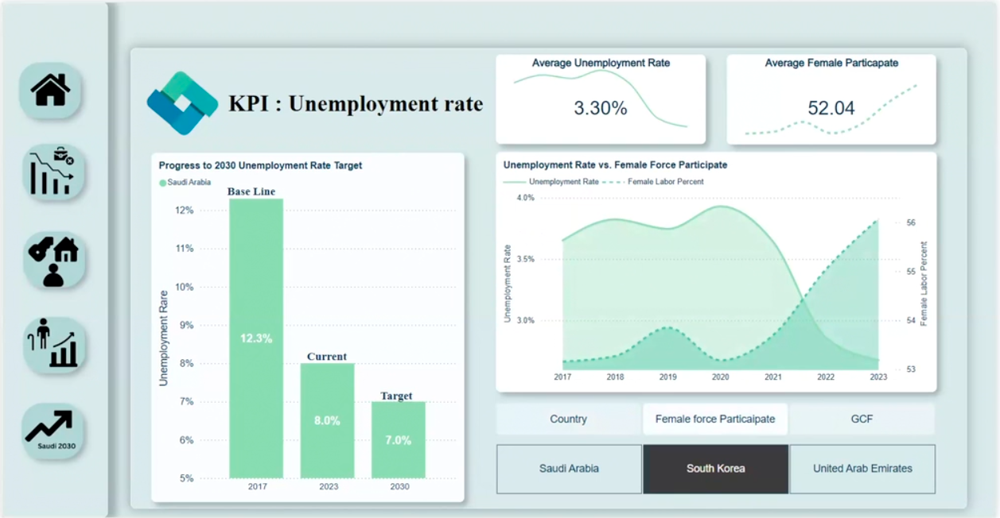
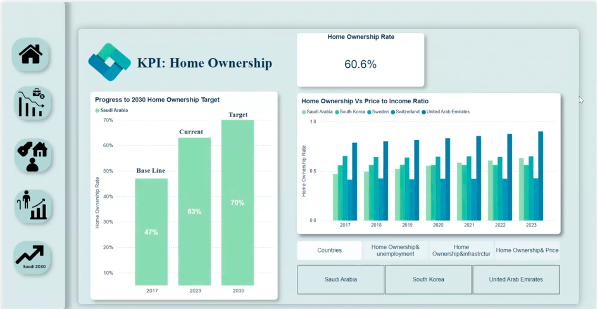
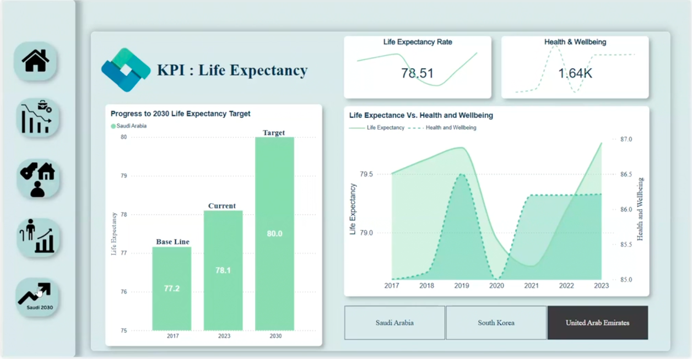

Quality of Life
This project focuses on accelerating the progress of Saudi Arabia’s Quality of Life Program, a key initiative under the Vibrant Society theme of Vision 2030. The program aims to enhance the lives of residents and visitors by promoting culture, entertainment, sports, and tourism. By analyzing key performance indicators (KPIs) such as unemployment rates, homeownership rates, and life expectancy, we identified actionable insights to help improve Saudi Arabia’s quality of life in alignment with Vision 2030 goals.
Project Overview
Introduction
Quality of life is a crucial factor for nations, encompassing elements like employment stability, homeownership, and public health. Saudi Arabia’s Vision 2030 outlines several programs to improve well-being, but this project focuses on further advancements to make society more prosperous and livable. Through a comparative analysis of KPIs like unemployment, homeownership, and life expectancy, we benchmarked Saudi Arabia against high-ranking countries to uncover improvement opportunities and align our findings with Vision 2030’s objectives.
Benchmarking and Analysis
For this analysis, Saudi Arabia was compared with the following countries based on their strong performance in quality of life metrics:
- Sweden: Known for high quality of life in Scandinavia with a population exceeding Saudi Arabia’s.
- Switzerland: Selected for its high standards of living and a population similar to Saudi Arabia’s.
- South Korea: A leader in East Asia for quality of life, providing insights from a dynamic region with a comparable population.
- United Arab Emirates: A high-performing country in the MENA region, sharing geographical and cultural similarities with Saudi Arabia.
Data Analysis and Findings
Life Expectancy Comparison
Saudi Arabia lags behind countries like Sweden and Switzerland in life expectancy. For example, Sweden’s average life expectancy is 82.4 years, while Saudi Arabia's is 75.6 years. By increasing investments in preventive healthcare, Saudi Arabia can potentially improve life expectancy.
Homeownership Rate Analysis
Saudi Arabia’s homeownership rate is lower than that of countries like the UAE, which has a homeownership rate of 83.7%. To increase homeownership, Saudi Arabia could invest in affordable housing programs and improve access to home loans.
Unemployment Rate
Saudi Arabia has a higher unemployment rate compared to countries like South Korea. Efforts to diversify job opportunities and enhance skills development programs will be essential in reducing unemployment.
Recommendations
Following the analysis, we proposed the following recommendations to enhance Saudi Arabia’s quality of life:
- Enhance Healthcare and Preventive Services: Invest in healthcare, focusing on preventive services and national wellness programs inspired by Sweden.
- Implement Chronic Disease Screening: Adopt a Chronic Disease Early Screening Program similar to the UAE’s model to improve public health outcomes.
- Strengthen Community Support: Develop social support systems and community programs inspired by Switzerland and Sweden to promote well-being.
- Expand Employment Opportunities: Create vocational training programs targeting emerging sectors, inspired by South Korea’s successful workforce development initiatives.
- Support Homeownership: Focus on infrastructure and housing affordability to increase homeownership rates, inspired by models in the UAE.
- Encourage Female Workforce Participation: Support women in the workforce through policies similar to South Korea’s, including childcare services and workweek capping.
- Increase Gross Capital Formation (GCF): Foster economic growth by boosting private and public investments in key sectors, inspired by the UAE’s initiatives to increase GCF.
Conclusion
This project has provided valuable insights into Saudi Arabia's quality of life compared to other high-ranking nations. While progress has been made, there are still opportunities to enhance health, social support, employment, and homeownership. By adopting the strategies proposed, Saudi Arabia can significantly improve its quality of life, positioning itself as a global leader in livability and prosperity.
Tools Used:
- Python
- Excel
- Power Query Editor
- Power BI